Guide · updated 11 October 2026
28 questions to ask a wedding venue before you book
Most surprises on a wedding bill come from questions nobody asked at the viewing. Take this list with you, and tick off what the venue has already told you online.

Dates and numbers
- Is our date free, and how long will you hold it while we decide?
- What is the minimum number of guests on our day of the week?
- How many can you seat for the meal, and how many in the evening?
- What happens if our numbers go up or down?
- Is anyone else getting married here that day or weekend?
The ceremony
- Are you licensed for civil ceremonies, indoors and outdoors?
- Where would we marry if it rains?
- Where do guests wait between the ceremony and the meal?
- Can we have a religious or celebrant-led ceremony here?
Food and drink
- Is catering in-house, from an approved list, or our choice?
- Can we bring our own drinks, and is there corkage?
- What do evening guests eat?
- Can you cater for every dietary requirement we have?
- When does the bar close?
- Do suppliers need a meal, and who provides it?
The day itself
- What time can we and our suppliers arrive, and when must everyone leave?
- When does the music stop?
- Are there rules on confetti, candles, fireworks or noise?
- Is the space heated, and does that limit the season?
- Who is our contact on the day?
- What furniture, linen and equipment are included?
Staying over and travel
- Are there rooms on site, and who gets them?
- Where can other guests stay nearby?
- Is there parking, and can cars stay overnight?
- How easy is it to get a taxi late at night?
The contract
- What secures the date, and when is the balance due?
- What happens if we need to move or cancel?
- Do you require wedding insurance or a damage deposit?
What Sussex venues already tell you
Some venues answer these questions on their websites. A few examples from our checks:
- Michelham Priorypublishes its finish times: last orders at 10.50pm, music off at 11pm, carriages at 11.30pm.
- Gote Barnis unheated, so it only takes weddings from late April to early October.
- Bignor Parkgives you two days to set up and two days to clear, and you choose caterers from its approved list.
- Leonardslee Gardens Housesays in its brochure that vegan and dairy-free meals aren't available.
- Southend Barnssleeps up to 22 adults and two children on site, in a suite, a shepherd's hut and bell tents.
Questions couples ask
What should I ask a wedding venue at the first viewing?
Start with dates, guest numbers and the ceremony licence, then catering rules, finish times and what is included. Those decide whether the venue can work before you think about style.
What questions do couples forget to ask?
Minimum guest numbers on your day of the week, supplier meals, whether the space is heated, and late-night taxis come up most often.